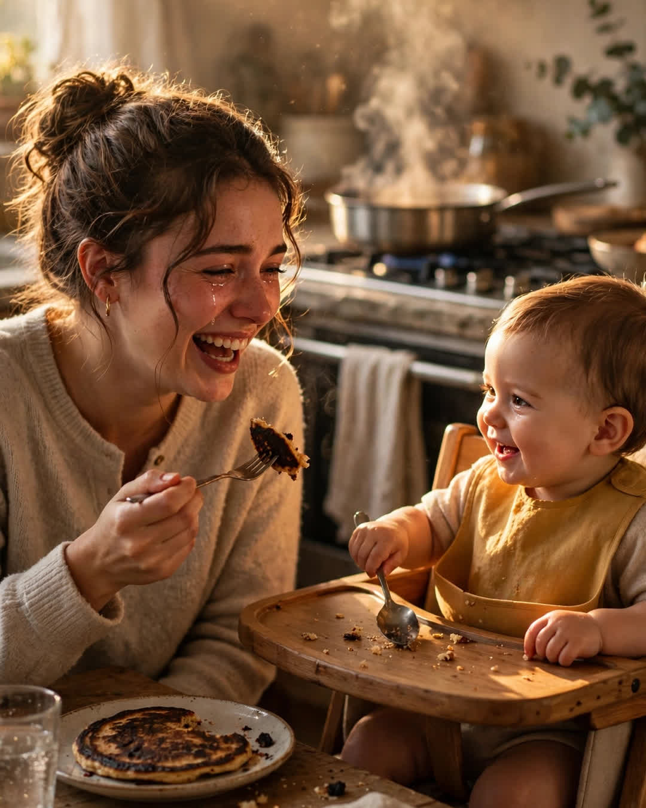

The Burnt Pancake
A Clipp Kaili original story

The first pancake I ever made for my daughter came out black on one side and raw in the middle, and I stood in my kitchen at six in the morning and cried over it like it was a diagnosis.
She was eight months old, strapped into her high chair, watching me with the total, unearned faith babies have — banging her spoon, thrilled about a breakfast I was actively ruining. The smoke alarm had opinions. The dog had left the room. And I heard it, clear as a phone call, in my own head, in my mother's voice: "The first pancake is always for the cook to learn on, baby. Even the bad ones get eaten with love in this house."
My mother has been gone two years.
I have heard her in my head before — at the grocery store, at the pediatrician — but never like that, never exactly when I needed her, with exactly the sentence she said a thousand Saturday mornings in a kitchen three states and a lifetime away. She burned the first pancake of every batch. I thought, growing up, that she was just bad at first pancakes. It took me until I was a mother myself, standing in smoke at dawn, to understand: she never once let a burnt pancake make her feel like a failed mother. She scraped it, ate it herself with extra syrup "so it doesn't go to waste and neither does the lesson," and made the second one golden.
The lesson was never hidden. I had just been too young to be the one who needed it.
I scraped my black-and-raw disaster onto a plate. I sat down across from my daughter, who was now wearing more banana than she had eaten, and I ate that terrible pancake with extra syrup while she watched, solemn as a judge.
"Your grandma," I told her, "burned the first pancake every single time, and she ran the best kitchen in three counties. So we're right on schedule."
She banged her spoon in approval.
Here is what nobody tells you before you become a mother: you spend the whole thing certain you are the first woman in history to do it badly — the first to burn breakfast, lose patience, cry in a pantry. And then, in the smoke and the ordinary failure of a Tuesday, your mother's voice arrives in your head — not as a haunting, but as a hand on your back — and you realize she stood exactly here, in this exact inadequacy, and what she did with it was not perfection. It was grace, served warm, one pancake at a time. She just never announced it.
She let me believe she had it all figured out so that I would have something to aim at. Now I know the truth, and it is so much better than the lie: she figured out nothing in advance. She forgave herself in real time, out loud, in front of her children, so that when our turn came, the forgiveness would already be in our heads, in her voice, ready.
The second pancake came out golden.
It always does. That was her real recipe — and this morning, in my smoky little kitchen, with my daughter banging her spoon, I finally, fully inherited it.
This story is a work of fiction, written to touch hearts and bring families closer.
← Back to all stories